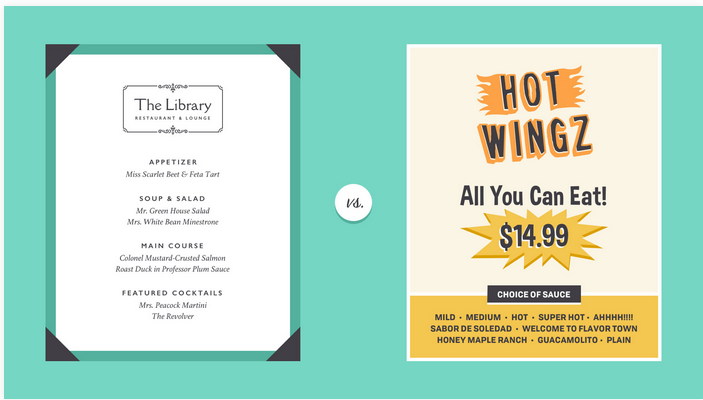
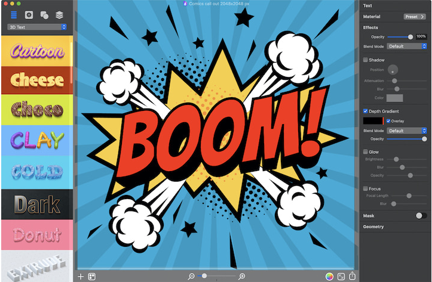
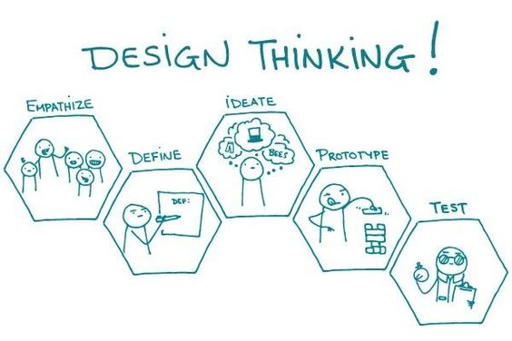

Welcome to CreativeStudio
Your one-stop destination for creative design solutions
Get Started
Hello! My name is Cicilia Zhuo, and I am a passionate graphic designer and content marketer with over five years of experience in the industry. I specialize in creating visually stunning designs and compelling content that engages and captivates audiences.
Throughout my career, I have worked with a diverse range of clients, from startups to established brands, helping them achieve their marketing and branding goals. I have a keen eye for detail and a creative approach to problem-solving, allowing me to deliver high-quality designs and content that resonate with target audiences.
I excel in graphic design, utilizing industry-standard tools such as Adobe Photoshop, Illustrator, and InDesign to create stunning visuals, including logos, branding materials, and promotional graphics.
My expertise in content marketing extends to creating compelling written and visual content that drives engagement and conversion. I am skilled in crafting blog posts, social media content, email campaigns, and more.

Majuri’s version of the book is made up of fifteen booklets, which each contain one of the essay’s informative chapters, making the writing both approachable and enjoyable in short windows of time,” as the designer explains.
Read More
Work on a publication focusing on Canadian foodd showcases their skills in branding, copywriting, photography, videography, and more. Adding a printed project
Read More
Portugal-based designer Mariana Malhao’s online portfolio is full of playful projects, but this coloring book definitely stands out. Malhao has lent her design skills to a range of projects, from jewelry to ceramics. This coloring book represents her uniquely playful style in a creative way.
Read MoreTyperoom dedicates its blog to typography inspiration. It features specific trends in typography, font designers, and the role of lettering in design and society. The posts cover anything from in-depth examinations of particular fonts to interviews with industry experts.
Read MoreWelcome to this page which is dedicated to understanding the essence of graphic design. I'm Cicilia Zhuo, and I'm thrilled to guide you through this journey.
Graphic design is more than just creating visually appealing content. It's about communication, storytelling, and leaving a lasting impression on your audience.
Throughout my career, I've witnessed the transformative power of graphic design. From crafting captivating logos to designing impactful marketing materials, every element plays a crucial role in conveying a message effectively.
Join me as we delve into the world of graphic design, exploring its principles, techniques, and endless possibilities.

If you're interested in further exploring graphic design, here are some recommended readings:
These books offer valuable insights into the theory, practice, and history of graphic design, and they can serve as excellent resources for both beginners and seasoned professionals.
HomeVisual branding is an integral aspect of graphic design, influencing brand perception and recognition.
Branding and visual identity are all around us. Look closely, and you'll find them on websites, product packaging, and different types of advertising. Even personal items, like documents and business cards, bear some form of identity.

Simply put, branding is what other people think—about you, your company, your product, or your service. Visual identity is what that brand looks like, from your logo to your color choices and so much more.

Strong visuals can be very persuasive. Think of your own experiences as a consumer. Have you ever chosen a product simply because you liked the way it looked? Understanding visual identity can help you make more thoughtful design decisions, regardless of your role, medium, or skill level.
Visual identity is kind of like a preview of your brand. Each part of your design is a clue that tells the viewer what they can expect. Your aesthetic can be traditional, modern, or a little more out there—every brand is different. No matter what, all of your design elements work together to show exactly what your brand is about.
Of course, it's not all business. You can apply the concept of identity to almost any type of project, including personal designs. Whether you're updating your resume or looking for ways to enhance your blog, there are many benefits to having a consistent visual style.
HomeI embarked on my graphic design journey with a passion for creativity and visual storytelling. From a young age, I was drawn to art and design, and as I honed my skills, I realized the profound impact that design can have on communication and perception.
After completing my formal education in graphic design, I eagerly entered the industry, eager to apply my knowledge and creativity to real-world projects. Throughout my career, I've had the privilege of working with diverse clients and industries, each presenting unique challenges and opportunities for innovation.
Whether it's crafting a brand identity that resonates with consumers or designing user-friendly interfaces that enhance the digital experience, I am constantly inspired by the possibilities of graphic design. Each project fuels my passion for creativity and drives me to push the boundaries of design excellence.
As I continue on my journey, I am committed to lifelong learning and growth, staying abreast of emerging trends and technologies in the ever-evolving field of graphic design. I am excited to see where this journey takes me and the impact that I can make through the power of design.
HomeThe art of creating and organizing type is known as typography. Typographers use a variety of fonts, spacing, widths, and sharpness to make the text more readable, orderly, and pleasant to read.
Typography has a lot of power. The field, however, isn’t and shouldn’t be limited to designers. Writers would also benefit from studying and employing typography. Why?
It influences not just what we read but also how we read.
Many graphic design apps can help create beautiful typography. Art Text stands out among these apps by having its prime purpose to assist users in creating highly influential typography for their content. With Art Text, users can apply text effect presets to their headings and titles, or design their typography graphics from scratch, including 3D typography.
As a graphic designer, understanding typography is essential for creating impactful designs across various media, including print, web, and digital platforms.
By mastering the principles of typography, graphic designers can enhance the clarity, impact, and aesthetic appeal of their designs, effectively communicating with their target audience.
HomeColor theory plays a crucial role in graphic design, influencing aesthetics, emotions, and communication. Understanding color principles enables designers to create visually appealing and effective designs that resonate with their audience.
Here are some fundamental concepts of color theory in graphic design:
The primary colors, red, blue, and yellow, are the foundation of all other colors. They cannot be created by mixing other colors together.
Secondary colors are created by mixing two primary colors together. They include orange, green, and purple.
Color harmony refers to the pleasing combination of colors in a design. Common color harmonies include complementary, analogous, and triadic schemes.
Colors evoke psychological and emotional responses in viewers. For example, red can convey passion or urgency, while blue is often associated with calmness or trust.
Contrast is essential for creating visual interest and hierarchy in a design. Using contrasting colors can draw attention to key elements and improve readability.
By applying color theory principles effectively, graphic designers can enhance the visual impact and communication of their designs, conveying messages with clarity and resonance.
HomeAs a seasoned graphic designer, I have developed a deep appreciation for the tools and techniques that empower creativity and enable effective communication. Graphic design tools serve as extensions of our creative vision, allowing us to bring ideas to life and connect with audiences on a deeper level.
Here's why I love content design and the tools that facilitate it:
Graphic design tools offer unparalleled versatility, allowing designers to work across various mediums and formats. Whether creating digital illustrations, print materials, or multimedia presentations, these tools provide the flexibility to adapt to diverse design needs.
With advancements in technology, graphic design tools have become increasingly efficient, streamlining workflows and enhancing productivity. Features such as templates, presets, and automation tools help designers optimize their creative processes and focus on delivering exceptional results.
Graphic design tools inspire creativity by providing a canvas for experimentation and innovation. From sophisticated design software like Adobe Creative Suite to user-friendly online platforms, these tools empower designers to explore new ideas, push boundaries, and express their unique artistic vision.
Modern graphic design tools facilitate collaboration and communication among team members, whether working remotely or in a studio environment. Features such as cloud storage, version control, and real-time collaboration tools enable seamless interaction and idea exchange, fostering a collaborative creative process.
As someone deeply passionate about content design, I believe in the transformative power of visual communication. Whether crafting compelling brand narratives, designing impactful marketing materials, or engaging audiences through multimedia content, content design allows us to connect with people on a visceral level, eliciting emotions, sparking conversations, and driving meaningful action.
Through strategic use of typography, imagery, color, and layout, content design transcends language barriers and resonates with audiences across cultures and demographics. It's a powerful tool for storytelling, persuasion, and advocacy, enabling brands and individuals to share their message with the world in a memorable and impactful way.
My love for content design stems from its ability to inspire, inform, and influence. It's not just about creating visually appealing graphics; it's about crafting meaningful experiences that leave a lasting impression and evoke a response. It's about harnessing the power of design to inspire positive change and make a difference in the world.
HomeImage Manipulation: The What, How, and Why It's Necessary Image Manipulation refers to the act of transforming images to arrive at the desired output. Through the art of photo manipulation, you are able to transcend your image into a true piece of art, Whereas, image manipulation can be done through the use of various image editing tools or software.
Image manipulation is a fundamental aspect of graphic design, allowing designers to transform ordinary images into extraordinary works of art. While basic editing tools offer essential functionalities like cropping and resizing, advanced techniques take image manipulation to a whole new level, enabling designers to unleash their creativity and achieve stunning visual effects.
Photo retouching involves enhancing the appearance of images by correcting imperfections, adjusting colors, and improving overall image quality. Advanced retouching techniques, such as frequency separation and dodge and burn, allow designers to achieve professional-grade results with precision and finesse.
Composite imaging involves combining multiple images to create a seamless and cohesive visual composition. Advanced compositing techniques, such as masking, blending modes, and layer adjustments, enable designers to integrate elements from different sources and create compelling narrative-driven visuals.
Digital painting involves using specialized brushes and tools to create artwork from scratch or enhance existing images. Advanced digital painting techniques, such as custom brush creation, texture mapping, and color blending, allow designers to achieve realistic and expressive results that rival traditional painting methods.
3D rendering involves creating three-dimensional models and scenes using computer-generated imagery (CGI). Advanced 3D rendering techniques, such as photorealistic rendering, lighting and shading effects, and depth of field manipulation, enable designers to produce lifelike visuals for various applications, including product design, architectural visualization, and animation.
Special effects involve adding dynamic elements and visual enhancements to images to create impact and drama. Advanced special effects techniques, such as particle simulations, lens flares, and digital compositing, allow designers to create stunning visual effects that captivate audiences and elevate the overall aesthetic of their designs.
Mastering these advanced image manipulation techniques requires practice, experimentation, and a keen eye for detail. By honing their skills in these areas, graphic designers can push the boundaries of creativity and deliver visually stunning and conceptually rich designs that resonate with audiences and leave a lasting impression.
HomeInteractive design is a dynamic and evolving field that focuses on creating engaging and user-friendly digital experiences. Whether designing websites, mobile apps, or interactive media, understanding and applying interactive design principles is essential for creating effective and memorable user interactions.
Usability is the foundation of interactive design, ensuring that digital products are intuitive and easy to use. Designers must prioritize simplicity, clarity, and efficiency to create seamless user experiences that enable users to achieve their goals quickly and effortlessly.
Accessibility is essential for ensuring that digital products are inclusive and usable by people of all abilities. Designers must consider factors such as color contrast, text readability, keyboard navigation, and screen reader compatibility to ensure that their designs are accessible to everyone.
Visual hierarchy refers to the arrangement of elements within a digital interface to guide users' attention and emphasize important content. Designers use principles such as contrast, scale, color, and typography to create clear visual hierarchies that help users understand the structure and significance of information.
Feedback and response are crucial for providing users with immediate feedback and guidance as they interact with digital products. Designers use visual cues, animations, and micro-interactions to communicate system status, confirm user actions, and provide feedback on errors or successful completion of tasks.
Interactivity is the essence of interactive design, allowing users to engage with digital products through gestures, clicks, taps, and other interactive elements. Designers must create interactive experiences that are responsive, intuitive, and enjoyable, fostering meaningful engagement and interaction with users.
Consistency is key to creating cohesive and unified user experiences across digital products. Designers must maintain consistency in terms of visual design, interaction patterns, navigation structures, and terminology to ensure that users can easily navigate and understand different parts of the interface.
By adhering to these interactive design principles, designers can create digital experiences that are not only functional and user-friendly but also engaging, memorable, and delightful for users.
HomeDesign thinking is a human-centered approach to problem-solving that emphasizes empathy, creativity, and iterative experimentation. It's a mindset and a set of methodologies used by designers and non-designers alike to tackle complex problems and generate innovative solutions. Let's explore some key methodologies within the realm of design thinking:
The empathize phase involves understanding the needs, motivations, and behaviors of the people for whom you are designing. This often involves conducting user research, interviews, and observations to gain deep insights into users' experiences and challenges.
In the define phase, you synthesize the insights gathered during the empathize phase to define the problem statement or opportunity you want to address. This involves framing the problem in a way that is clear, specific, and actionable, ensuring alignment with user needs and business goals.
Ideation is the phase where you generate a wide range of creative ideas and solutions to address the defined problem. This often involves brainstorming sessions, sketching, prototyping, and exploring unconventional approaches to spark innovation and creativity.
In the prototype phase, you develop low-fidelity and high-fidelity prototypes to test and iterate on your ideas. Prototypes can take various forms, including paper prototypes, digital wireframes, interactive mockups, and physical models, allowing you to quickly gather feedback and refine your concepts.
The test phase involves gathering feedback from users through usability testing, user interviews, and other evaluative methods to validate your prototypes and iterate on your designs. This iterative process helps uncover usability issues, identify opportunities for improvement, and refine your solutions based on user feedback.
By following these design thinking methodologies, you can foster a culture of innovation, collaboration, and user-centricity within your organization, leading to the development of products and services that truly resonate with users' needs and aspirations.
HomeThroughout this journey exploring various aspects of graphic design, we've delved into its significance, principles, and methodologies. From understanding the fundamentals of visual branding to embracing the iterative nature of design thinking, each topic has shed light on the multifaceted nature of graphic design and its transformative power.
Graphic design is not merely about creating aesthetically pleasing visuals; it's about storytelling, problem-solving, and making meaningful connections with audiences. Whether it's crafting compelling brand identities, designing immersive user experiences, or leveraging advanced image manipulation techniques, graphic designers play a pivotal role in shaping the way we perceive and interact with the world around us.
As we conclude this exploration, let us embrace the endless possibilities of graphic design and continue to push the boundaries of creativity and innovation. Whether you're a seasoned designer or just embarking on your journey, remember that every design has the potential to make a difference and leave a lasting impression.
Thank you for joining me on this journey through the realm of graphic design. Let's continue to inspire, innovate, and create together.
Home